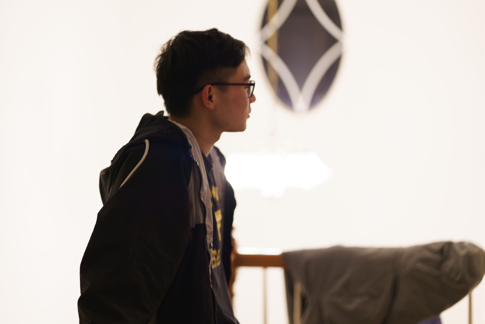

Get To Know More
About Me

I’m a Computer Science graduate student at Northeastern University with a non-traditional background, which shaped how I approach software engineering calmly, practically, and with a strong awareness of trade-offs. I’m interested in full-stack and backend development, especially building systems that are easy to reason about, maintain over time, and improve through real usage rather than demos or buzzwords.